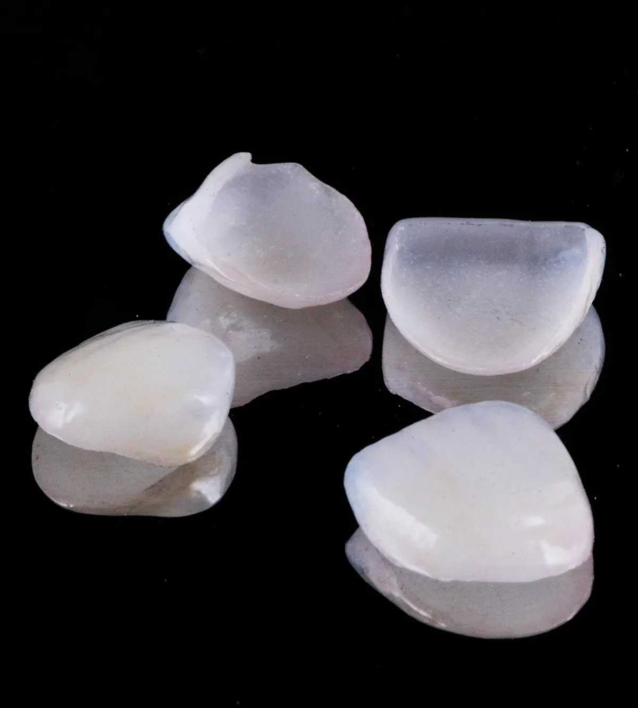
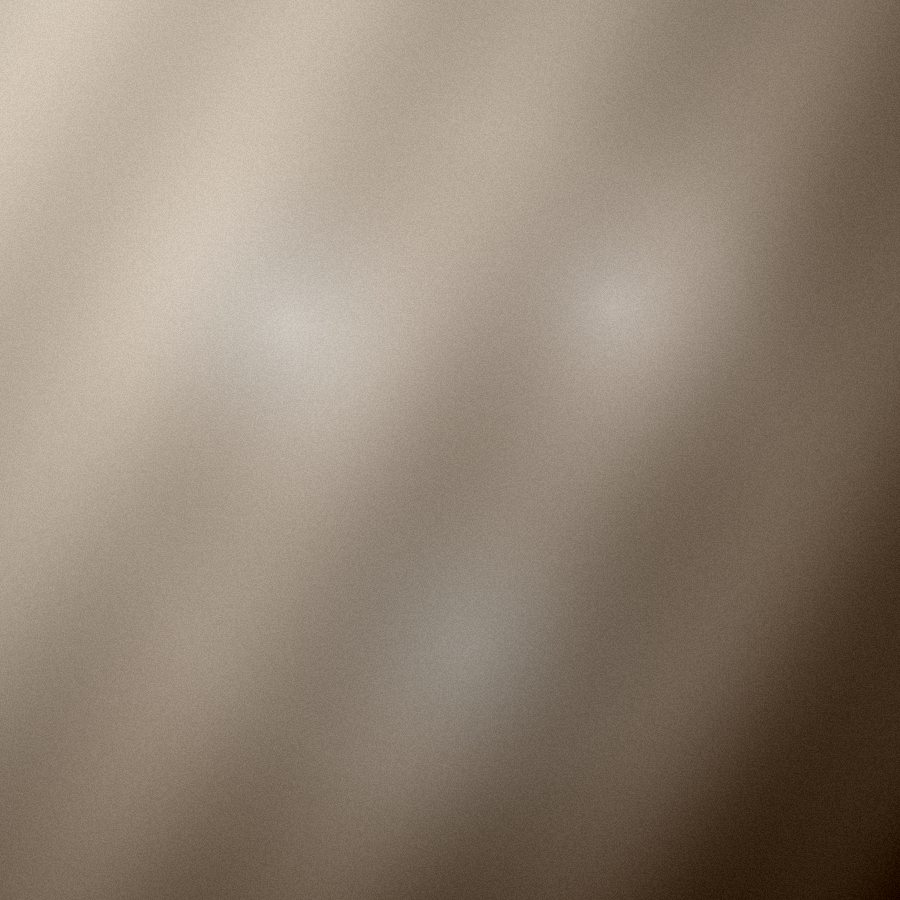
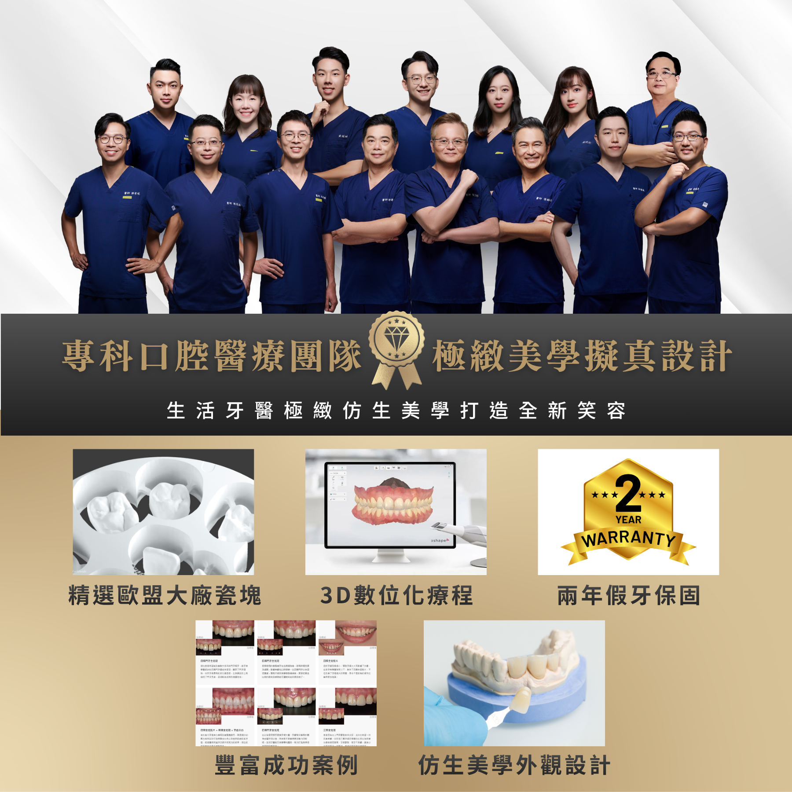
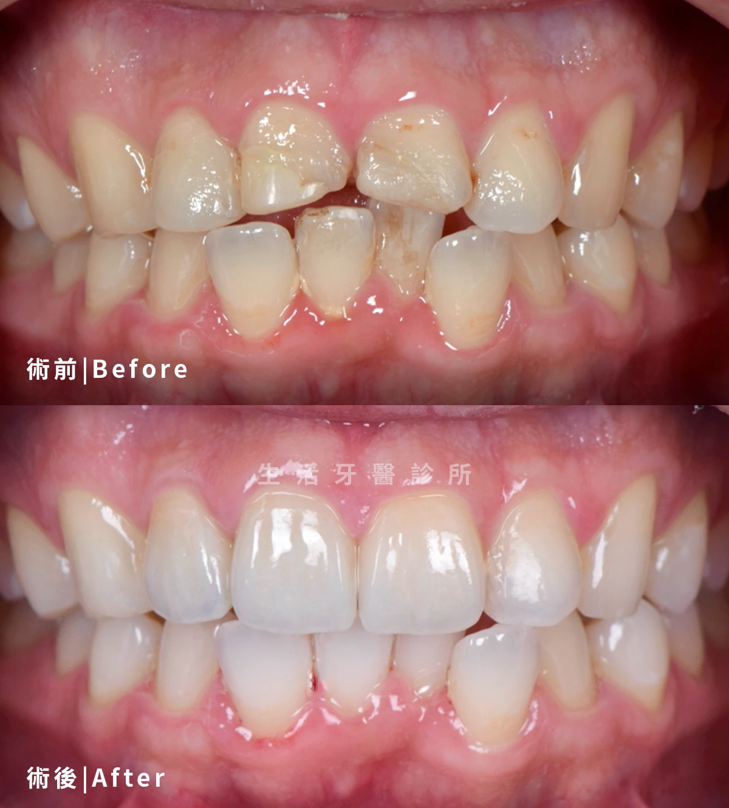
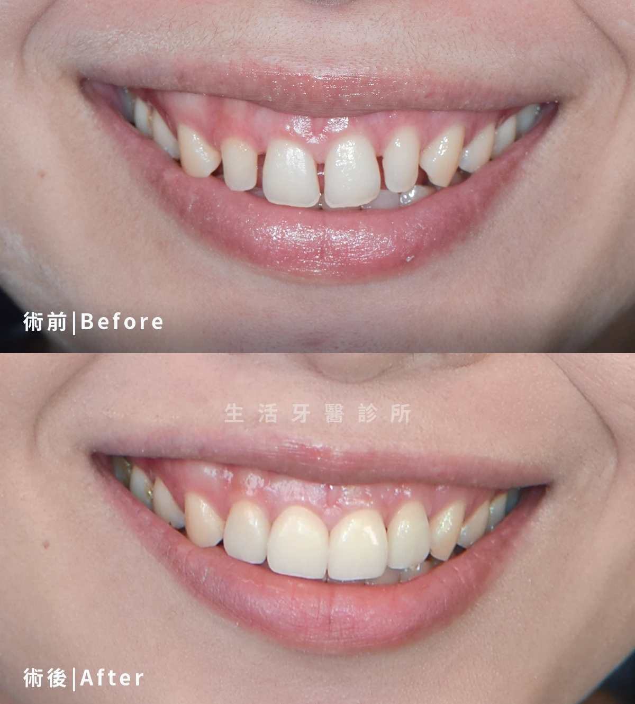
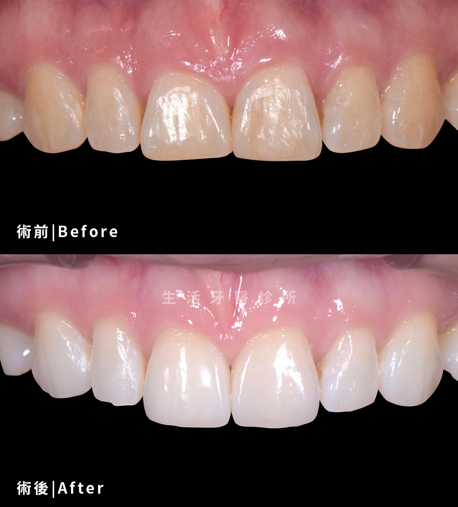

療程項目
陶瓷貼片Porcelain Veneer
以微創美學修飾齒色、齒型與微笑比例
陶瓷貼片是覆蓋於牙齒外側的薄型陶瓷修復，可改善牙齒顏色、形狀、大小比例與輕微縫隙，打造自然協調的微笑曲線。
微笑
比例設計
薄型
陶瓷修復
客製
色澤形態

療程介紹
了解陶瓷貼片，選擇合適治療
陶瓷貼片是覆蓋於牙齒外側的薄型陶瓷修復，可改善牙齒顏色、形狀、大小比例與輕微縫隙，打造自然協調的微笑曲線。
生活牙醫會依照每位患者的口腔條件、期待、預算與長期維護需求，安排完整檢查與醫師說明。療程開始前會先釐清適合對象、可能限制與替代方案，讓治療計畫更透明。
實際治療方式與時間會因牙齒狀況、牙周健康、咬合、生活習慣與全身病史而異，建議以現場醫師診斷為準。

改善微笑比例
調整齒型、長短與牙縫，讓笑容更協調
色澤客製
依膚色、唇形與鄰牙色階規劃自然亮度
保留齒質
在適合條件下可減少修磨量，保留較多原生齒質
美學溝通
透過照片與模型討論期待，降低成品落差
療程流程
從評估到穩定追蹤
每個療程都會先確認口腔基礎條件，再依診斷結果安排合適步驟與回診節奏。
美學諮詢
確認陶瓷貼片需求、病史與口腔狀況，先建立治療方向。
微笑資料收集
收集影像、掃描或口腔紀錄，讓醫師能更完整判斷。
模擬設計
依檢查結果說明治療方式、期程、限制與替代方案。
牙面修整與臨時貼片
依計畫執行治療，過程中持續確認舒適度與穩定度。
正式貼片黏著
完成後安排清潔照護與回診追蹤，維持長期成果。
治療比較
治療方式怎麼選
| 比較項目 | 陶瓷貼片 | 全瓷冠 |
|---|---|---|
| 修復範圍 | 覆蓋牙齒外側表面 | 包覆整顆牙齒外形 |
| 適合情況 | 齒色、齒型、牙縫微調 | 缺損較大或需保護牙齒 |
| 修磨量 | 條件合適時較少 | 通常需較完整修型 |
| 美學目標 | 改善微笑比例與亮度 | 重建齒型、強度與美觀 |
| 保護性 | 著重前牙外觀修飾 | 提供較完整包覆保護 |
生活牙醫的優勢
仿生美學設計打造笑容
陶瓷貼片重視齒型、色澤與微笑比例，生活牙醫以歐盟瓷塊、3D 數位療程與案例經驗規劃自然外觀。

專科口腔醫療團隊
由美學修復醫師評估笑線、齒型與牙齦比例，規劃貼片治療方向。
精選歐盟大廠瓷塊
選用穩定瓷塊製作薄型貼片，兼顧色澤層次與自然透光感。
3D 數位化療程
透過掃描與數位設計溝通牙齒比例、排列與貼片外型。
仿生美學外觀設計
依膚色、唇形、鄰牙色階與微笑曲線設計，打造自然新笑容。
豐富成功案例
以實際貼片案例協助討論期待，降低成品與想像之間的落差。
兩年假牙保固
完成後提供保固與照護建議，追蹤貼片邊緣、咬合與清潔狀況。
實際案例分享
貼片帶來的微笑改變
陶瓷貼片能依齒型、色階與微笑比例客製設計，以下案例展示前牙美學修復後的自然改善。

陶瓷貼片 × 前牙美學
調整齒型比例，讓笑容更柔和
針對前牙齒型不一致與微笑比例進行貼片設計，改善牙齒長寬、邊緣線與整體明亮度。

陶瓷貼片 × 齒色改善
改善暗沉齒色，保留自然層次
以薄型陶瓷貼片修飾前牙色澤與形態，讓牙齒亮度提升，同時維持不突兀的自然感。

陶瓷貼片 × 牙縫修飾
修飾前牙縫隙，重建微笑曲線
透過貼片寬度與外型設計，改善前牙縫隙與齒列視覺不連續，讓微笑線更完整。
常見問題
陶瓷貼片療程FAQ
整理諮詢時常見的問題，協助您在看診前先掌握基本方向。
若有嚴重蛀牙、牙周病、咬合異常或磨牙習慣，需先治療或評估風險，再決定是否適合貼片。
貼片需要良好的牙面條件、黏著流程與咬合設計。完成後仍應避免啃咬硬物，並定期回診維護。
若主要是牙齒顏色偏黃，可先評估美白；若同時想改善齒型、縫隙或比例，貼片較能整體調整。
開始您的陶瓷貼片評估
想改善牙齒顏色、齒型或微笑比例，可以先透過美學諮詢確認貼片、全瓷冠或美白哪一種方式更適合。